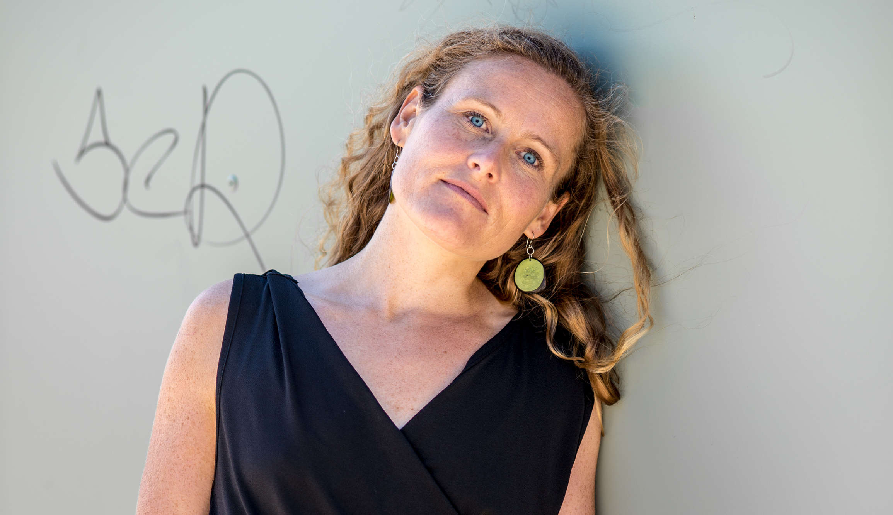

<section id="vita" class="bglightyellow">
  
  <div class="container align-center">

  <!-- </div> align="center"> -->
  <div class="text-center">
    <h2>Vita</h2>
  </div>
  <hr class="small" style="border-color: black;">
  <div class="text-center">
    <!-- <div style="margin-bottom: 50vh;"></div> -->
    <a href="../assets/Franziska Gündert CV 2019.pdf" target="_blank" class="btn btn-dark btn-lg">Tabellarisch <i class="fa fa-file"></i> </a>
    <a href="../assets/Franziska Gündert Lebenslauf ausformuliert.pdf" target="_blank" class="btn btn-dark btn-lg">Persönlich <i class="fa fa-file"></i> </a>
    <br>
  </div>
  
  <div id="cvtext" class="row">
    <div class="col-sm-4">
      
    </div>
    
          <div  class="col-sm-4 text-left">
            Die in Oldenburg lebende Mezzosopranistin Franziska Gündert studierte an der 
            Musikhochschule Freiburg bei Prof. Sato-Schöllhorn und schloss ihr Studium mit dem 
            Master im Konzert- und Opernfach ab. 
            Sie vertiefte ihr Gesangsstudium in der Opernklasse am Conservatorium of Music in Sydney 
            bei Stephen Yalouris. Desweiteren gab sie erfolgreiche Konzerte in Australien.
            </br>    
            Bereits während des Studiums war Franziska Gündert in der Rolle des Lazuli in der 
            Opera comique l‘étoile von Charbrier zu sehen sowie der dritten Dame in 
            Mozarts Zauberflöte in Zaragossa. Am Theater Freiburg verkörperte Sie 
            Nireno in „Giulio Cesare“ von Händel und wirkte am Theater Basel in dem Musiktheater 
            „Oresteia“ unter der Regie von C. Bieito mit. 
            Im Sommer 2018 führte Sie die Rolle des Annio an die Konstanzer Rathausoper.
          </div>
          <div class="col-sm-4 text-left">
            Neben der Oper gilt Franziska Günderts Interesse immer mehr auch dem Konzert und Ensemble-Gesang. 
            Konzertreisen führen sie unter anderem nach Belgien, Südfrankreich, Asien in die Schweiz und 
            nach Italien. Mit Mendelssohn “Elias” war sie bereits in Rom zu hören,sowie mit Vivaldi “Gloria“ und 
            Bach, “Magnificat” in Padua und Venedig.
            </br>
            Schon viele Jahre in unerschiedlichen Vokalensembles singend ist Franziska Gündert seit 2016 Mitglied 
            des ChorWerk Ruhr unter der Leitung von Florian Helgath.  und seit Juli 2017 im der Zürcher Sing-Akademie.
            </br>    
            CD-Produktionen sowohl solistisch als auch im Vokalensemble runden ihre künstlerische Tätigkeit ab.
          </div>
      </div>

      <!-- /.row -->
  </div>
</section>
